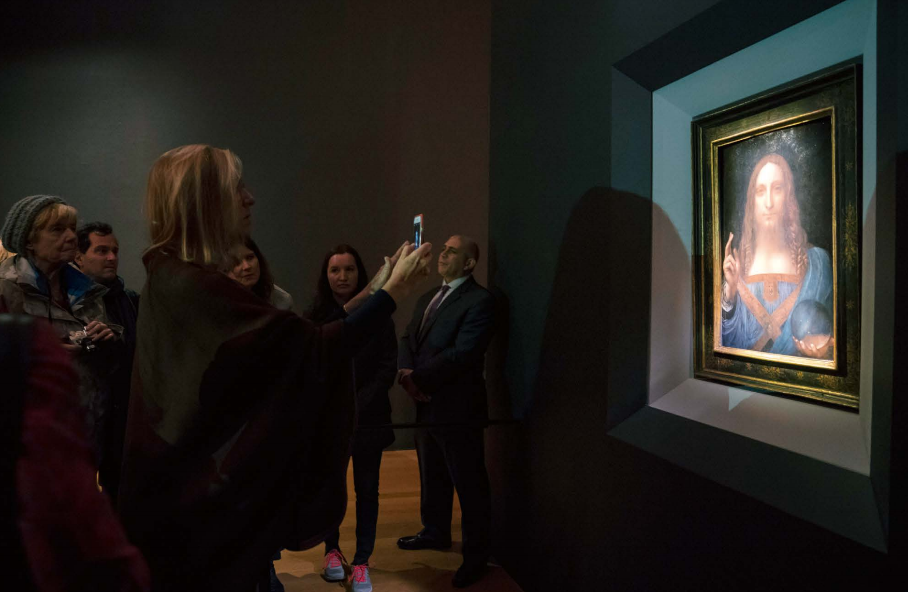

A reported feature on how “record prices” are manufactured — through information asymmetry, intermediaries, and a market that is structured to stay opaque.

What does it really mean when an artwork becomes “expensive”? Based on interviews with British art market expert Georgina Adam and close observation of auction practices, this piece examines how value is constructed through intermediaries, information asymmetry, and long-standing market conventions.
Rather than judging the art market, the article focuses on how its mechanisms operate in practice — and why they continue to produce trust, desire, and inequality at the same time.
Intro: As exhibition-going becomes a new lifestyle trend, we grow increasingly puzzled by the money flows behind it.
Even those least interested in art can hardly ignore the astronomical prices that have repeatedly flooded the news in recent years: Leonardo da Vinci’s Salvator Mundi, which became the world’s most expensive artwork at US$450.312 million; David Hockney’s Portrait of an Artist (Pool with Two Figures), which set an auction record for a living artist at US$90.3125 million; and Modigliani’s Nu couché, sold for US$157.2 million—the most expensive lot of 2018. At the recently concluded 2019 Sotheby’s Hong Kong Spring Sales, American pop artist KAWS’s The Kaws Album (2005) sold for RMB 115.966 million, at a premium of as much as 15 times—once again reigniting public debate over ever-rising art prices.
What, exactly, determines the price of a work? Why are some works so expensive? What creates the enormous price gaps between artworks? As exhibition-going becomes a new lifestyle trend, we grow increasingly puzzled by the money flows behind it.
Georgina Adam is a veteran British art-market expert with more than three decades of experience. She has traveled to key art-world sites around the globe, drawing on extensive cases to write Dark Side of the Boom: The Excesses of the Art Market in the 21st Century, a book that helps readers understand how the art market operates. In the book, Adam guides us—often in the first person—through studio visits, freeports, art-fair openings, and countless “dazzling parties.” Beneath these spectacles, she focuses on hidden backstories and shows how dealers, galleries, auction houses, collectors, and other players push prices with invisible hands. As one unnamed dealer put it, “This is the Wild West.” Some prices have risen tenfold or even a hundredfold in just a few decades, yet even industry insiders often do not fully understand how these deals actually work.
The book’s central thread is a notorious financial dispute in today’s art market. Swiss businessman Yves Bouvier is a powerful freeport-storage magnate who built the Singapore and Luxembourg freeports, providing “ultra-high-net-worth” clients with spaces to store high-value assets. In these heavily protected warehouses, wealthy owners can store ever-accumulating tangible assets—wine, artworks, antique cars— and complete sales and resales in extreme secrecy, without paying taxes.
Beyond that role, Bouvier also worked as an art intermediary. Over the past decade, he helped Russian billionaire Dmitry Rybolovlev—known as the “fertilizer king”—acquire around 36 artworks and some furniture for roughly US$2 billion, including Salvator Mundi, which Bouvier sold to Rybolovlev in 2013 for US$127.5 million. In the art world, buyers and sellers typically transact through intermediaries, and keeping both parties’ identities confidential is commonplace. Relying on this structural opacity, prices in Bouvier-handled transactions were entirely non-transparent. Rybolovlev later claimed that only after a Manhattan-based art adviser, Sandy Heller, told him he had paid US$118 million for Modigliani’s Nu couché au coussin bleu—far above the previous owner’s sale price of US$93.5 million—did he realize Bouvier had taken an enormous profit, and he sued Bouvier for “fraud.” Yet the loss was already done: when Rybolovlev later resold via Christie’s, most works failed to reach the prices he had paid through Bouvier. For instance, Picasso’s Joueur de flute et femme nue, purchased for €25 million, ultimately sold at Christie’s for only €3.5 million.
Adam also records further disputes around Salvator Mundi. In an earlier transaction, three sellers sued Sotheby’s, claiming they did not know that after the painting was sold through the auction house for US$80 million, the buyer Bouvier resold it for US$127.5 million. Sotheby’s fought off the lawsuit, saying it had not anticipated Rybolovlev would be the final buyer. Another issue was authenticity: as Heller noted, it was not the kind of work an art adviser like her would recommend purchasing. Yet because it had entered the National Gallery in London’s 2011 Leonardo da Vinci exhibition as an authentic work— a form of national-institution endorsement—it ultimately achieved the record US$450.312 million price through Christie’s marketing.
This is only the tip of the iceberg. Across just over 200 pages, Adam cites more than 45 court cases: how artists and their works become brands and commodities under expanding supply and demand; how artworks, because of their portability, can be used for money laundering and tax evasion, moved easily across borders, even entangling owners in the Panama Papers; and a range of legal disputes—from appropriation controversies involving Richard Prince and Jeff Koons, to famous forgery and authentication scandals such as the Wolfgang Beltracchi case.
In this interview with Sanlian Lifeweek, Georgina Adam shares the gray zones of the art market as she sees them.